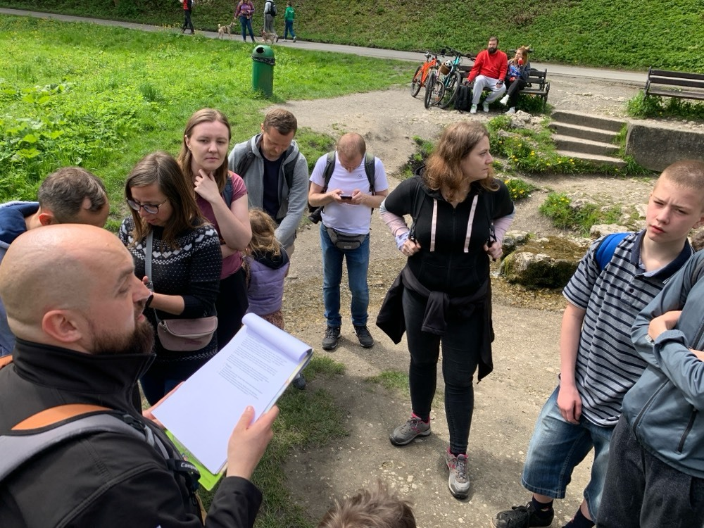
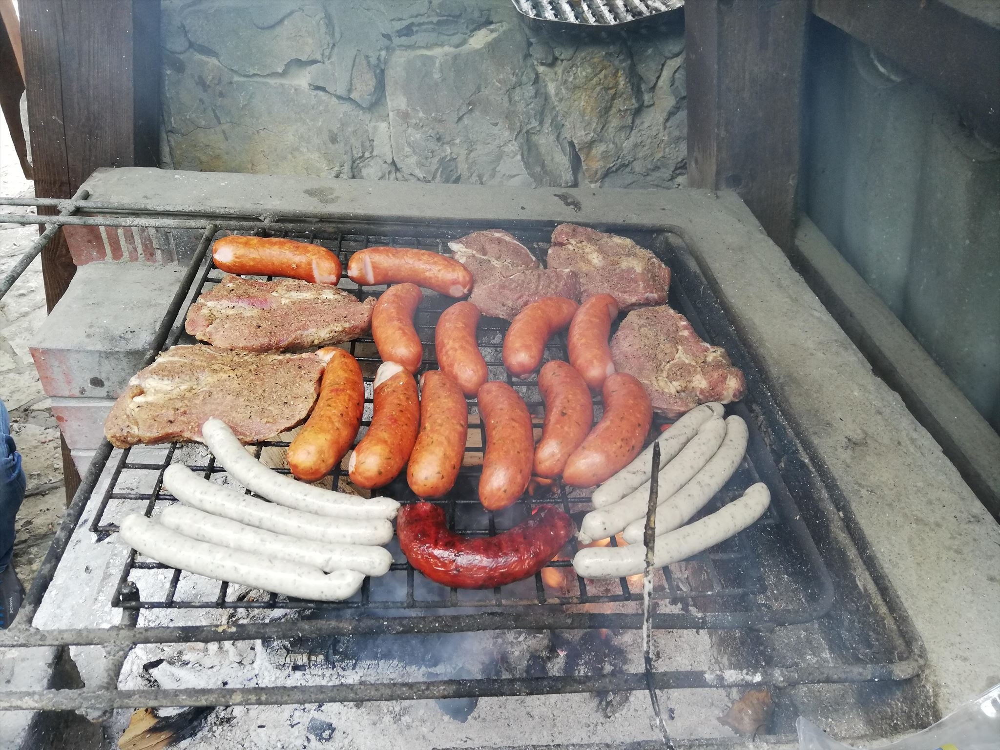
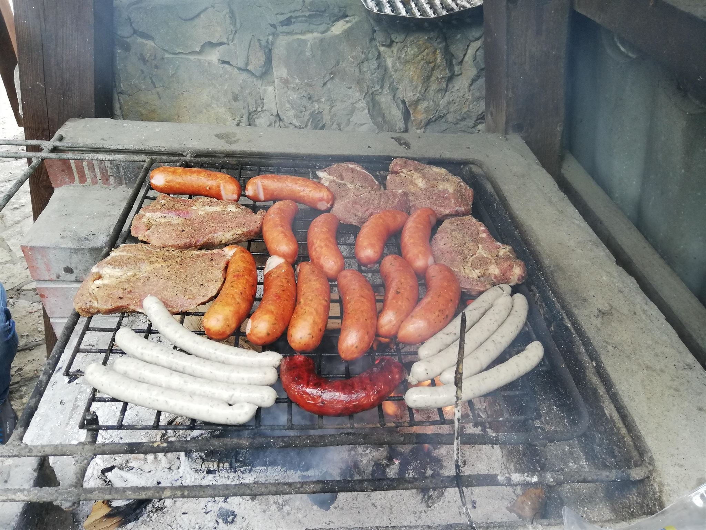

Styczeń
urodzinki, debaty i erfy
18-tka
GCAJ1VX 4 stycznia nemrodek
18-tka
GCAJ1VX 4 stycznia nemrodek

🧱 ZTK 🧱
cały rok Dominisia_krk
🧱 ZTK 🧱
cały rok Dominisia_krk
- coś
🧱 ZTK 🧱
cały rok Dominisia_krk


GeoForum: Debaty i dialogi
GCAHA7A 11 stycznia barucci
GeoForum: Debaty i dialogi
GCAHA7A 11 stycznia barucci


2024: Odyseja Earthcache!
GCAHCT4 13 stycznia CopernicusHigh
GeoForum: Debaty i dialogi
GCAHCT4 13 stycznia CopernicusHigh


🥂🎂🍾Drugie GeoUrodziny🍾🎂🥂
GCAJ3Y8 20 stycznia Quard32 & udar2 & Kasia_2014
Eventy 2024
Liczba eventów w Krakowie
147
Liczba eventów w Małopolsce
201
Liczba CITO w Małopolsce
12
(eventy)
gorgony

Skończyłem ciągłość :)
(ale nie wiem ile dni, coś koło 1099 dni)
marcin3243

Do 2023 roku byłem za granicą w jedynie 2 krajach- w Czechach i Niemczech. Dzięki ludziom, którym poznałem, rok 2024 kończę będąc już w 10 krajach i mając za sobą parę tysięcy kilometrów :D
Emson_

moje największe keszerskie osiągnięcie z tego roku to top 1 Polaków z ilością znalezionych keszy w Albanii
Dominisia_krk

moim geoosiągnięciem są wspaniali przyjaciele, bo gdyby nie kesze, to by tak nie było jak jest 😇
kranfagel

Wyciągnąłem 19 dni ciągłości FTFów :D
Kosoff

Odwiedziłem siedzibę geocachingu w Seattle :D
Milk_Bandit

Zdobyłem 1000 keszy!
kluczdoskarbu

w tym roku zacząłem keszować :P
elales

Moje osiągnięcie z tego roku to założenie virtuala we Włoszech: GCAJFV0 - La Mazurka di Dąbrowski, w miasteczku Reggio Emilia, niedaleko Bolonii, gdzie powstał tekst Mazurka Dąbrowskiego. Virtual jest przy tablicy upamiętniajacej to wydarzenie. Listing mi ładny wyszedł.
barucci

W tym roku najbardziej jestem dumny z ukończenie matrixa, 10-lecia keszowania, zainicjowania projektu Pele Mele, nagrania filmiku Krakow's Geocachers Welcome You. Istotność/ważność w kolejności od końca :-)
malpep

uczestniczyłam w 85 eventach (8 poza moim województwem - pomorskim i 7 poza Polską)
Prezes201

W sylwestra rok temu wbiłem 3 tys znalezień i zaczynając rok od równej liczby postanowiłem sobie dobić do 5 tys przez rok. Cel spełniony, nawet za bardzo bo zaraz stuknie mi 5500.
leneia

Zrobiłam 2 dni ciągłości!
Mom&Pat

Najlepsze moje kesze w tym roku to były w Bazylei w Szwajcarii. Super maskowania w centrum miasta, sporo radości przy szukaniu i ogromna ilość favoritów przyznana. Czekam na nowy rok bo podróżnicze plany mamy już na styczeń.
semaprint

Jeżeli chodzi o kończący się rok, to moje geocachingowe osiągnięcia podzieliłbym na dwie części:
- â€zawodowo†czyli â€stowarzyszeniowo†najważniejszym wydarzeniem dla mnie było oczywiście Geocaching Party 2024. Z jednej strony to była kolejna krakowska edycja którą miałem przyjemność współorganizować, z drugiej jednak - jak zawsze - było to bardzo duże wyzwanie.
- prywatnie to przekroczenie 10 000 znalezień, a podróżniczo geocaching w USA od Nowego Yorku po Los Angeles.
POKEMISTRZ
Moje geocachingowe osiągnięcia z tego roku to zdecydowanie podjęcie mojego pierwszego łódkowego kesza: GC30B7B. Ukończenie challange'a soratte 100 dni po 3 typy: GC6R8DT. A także dorzucenie dwóch nowych krajów: Niemiec i Rumunii. Natomiast chyba najlepszym wspomnieniem będzie organizacja naszego MEGA, na które złapałem się na ostatnią chwilę gdzie się super bawiłem!
Pogliś

Nasz najlepszy keszersko rok i po raz pierwszy przekroczony 1000 znalezień w roku oraz półroczna podróż pociągami i z namiotem po Europie.
pocztapp

Co do wyzwań z mijającego roku to jak wiecie, statystyki i wszelkie wyzwania nie są moją mocną stroną 🙃 traktuję naszą zabawę dość luźno. Natomiast to z czego jestem dumny to, że dalej przychodzicie na moje kesze i że Wam się podobają. Uzyskałem już ponad 400 punktów fav na keszach w mało atrakcyjnych turystycznie miejscach, co daje mi dużą satysfakcję czytając logi i zachęca do zakładania nowych.
Classik13

Moim największym sukcesem w tym roku była 50-dniowa ciągłość. Nie jest to może jakieś mega wielkie osiągnięcie, ale jestem z niego dumny, bo patrząc na to, że jestem ojcem małych bliźniaczek-dziewczynek i pracuję zawodowo, to taka ciągłość wymagała ode mnie dużo zaangażowania, kombinowania oraz samozaparcia.
Piętaszek

Udałem się do Malagi na krótki wypiczynek, a tam jest dużo EC, a że zawsze chciałem założyć swojego własnego EC robiąc go od podstaw(te, które mam są adoptowane), postanowiłem, że spróbuję podziałać na tym wyjeździe właśnie. Nie jestem jakimś specjalistą od geologii i tak naprawdę to, co najbardziej lubię w ec to amonity i inne skamieniałości, więc ubzduralem sobie, że znajdę amonita, choćby mi to miało cały pobyt zająć. Łaziłem cały dzień gapiąc się na ściany i pod nogi i po 2-3h znalazłem pierwsze okazy, ale były jakieś takie smutne i bez polotu, więc stwierdziłem, że podziałam dalej. I wyobraź sobie, że już dość późnym popołudniem przystanÄ…Å‚em przy jakims kościele, żeby zawiązać buta i ujrzałem TEN okaz, którego szukałem cały dzień😅 jakbym znalazł kwiat paproci😁 oczywiście znalezisko zostało uczczone założeniem ec. Nie dość, że pierwszy mój EC, nie dość że za granicą to jeszcze taki fajny okaz mi się trafiÅ‚â˜ºï¸ zdecydowanie to było moje najciekawsze wydarzenie geocachingowe w tym roku☺️
Piętaszek

Jouka01

Dla mnie w tym roku najważniejsze było założenie virtuala w Tatrzańskim Parku Narodowym, po ponad miesiącu użerania się z biurokracją i papierologią, gdzie przynajmniej z pięć razy miałam ochotę rzucić to w cholerę, ale ostatecznie jednak się udało :) A z takich przyjemniejszych - to przekroczenie 5000 znalezień
Murazor

Keszowe osiągnięcie z tego roku to niewątpliwie zdobycie w październiku poczwórnego Jasmera po znalezieniu dwóch keszy z sierpnia 2000: Potters Pond w maju i Lake Lanier w październiku bieżącego roku.
pigeox69

Najbardziej chyba cieszą nas FTFy z tego roku - w sześciu krajach, na dwóch kontynentach.
IzabelaSzymonFranio

W tym roku przełomowym było to, że Franek dołączył do naszego teamu i stąd zmiana nicka:) Początkowo niechętny i znudzony poszukiwaniem keszy dowiedziawszy się że braliśmy udział - jednego dnia w cito i spływie kajakowym, które uwielbia był nieprzejednany;). Druga fajna rzecz to virtual w Rzymie, ale to już inna historia.
falcon1984pl

O GC dowiedziałem się w marcu 2024 od kolegi Wojtka z pracy. Pomysł wydawał się ciekawy więc poszliśmy z synem na pierwsze kesze w pobliżu domu. Bardzo nam się spodobało i wciągnęliśmy się na maxa. W ciągu niecałych 10 miesięcy uzbieraliśmy ponad 1200 keszy.
Najlepsze historie/osiągnięcia roku:
- skompletowanie Petkozy w 100% w Lesie Radziszowskim (100 petek)
- ukończenie wszystkich serii Krjomi z bonusami (uważam że są świetne)
- keszowanie z rodziną w Gdańsku podczas majówki (prawie 100 keszy w kilka dni)
- nawiązanie wielu kontaktów, szczególnie pozdrawiam Classik13 :)
- miło wspominam też serię muzealną MNK, mini-serię Spacer po Pasie (Z-DNA), 2 kesze "Most nad Białuchą" (wismamami)
TomekS1976

Największym sukcesem TomkaS1976 jest to, że w tym roku nie stracił serca do Geocachingu. A nawet zyskał nowe - jak na załączonym obrazku.
TomekS1976

Krecik40

W tym roku byłem na pięknej wycieczce na Maltę oraz miałem możliwość zobaczenia Karnawału Noworocznego.
Krecik40

M&O&P

Nasze największe osiągnięcie i spełnienie marzeń podróżniczo-geocachingowych w 2024 roku to podróż przez Meksyk, z miasta CDMX przez Oaxaca, Chiapas na Jukatan. Podczas tej podróży, poza cudownymi przygodami i wspomnieniami, zaliczyliśmy nasz kesz nr 5000 (adventure lab); najdalej oddalony kesz (10,328.78 km): GC9C5PN; najbardziej wysunięty na zachód kesz: GCA158C; czy też najstarszy kesz (z 2001 roku): GC1DDE.
M&O&P
zuzajska

Chyba największym osiągnięciem było zgarnięcie skrzynki, która załapała się na terytorium Rosji :)
daksya

Na pewno jesteśmy keszersko dumni z tego, że w tym roku udało się nam znaleźć kesza w odległości 17 854 km od domu.
Zapamiętamy też nasze wspólne wyjazdy, zarówno te "duże" - z okazji 29 lutego, wypad na Słowację i Lajcik z FAVami i te w mniejszym keszerskim gronie. Będziemy też pamiętać o tym jak współtworzyliśmy nasz pierwszy keszerski film na letterboxa Kraków's GeoCachers Welcome You!
W ogóle dobrze jest być częścią krakowskiej keszerskiej społeczności.
Qinka

Musała (2925 m. n.p.m) czyli najwyższy szczyt na jakim dotychczas byłam (wyższy niż Rysy :P) albo inaczej - tam byłam najbliżej nieba :D w GC statach mam to jako: Highest elevated cache found: 2920 m, Mount Musala (VR) GC7B6WA Bulgaria.
Druga rzecz, z której jestem dumna to Drużynowe Mistrzostwa w Geocachingu podczas MEGA w Krakowie. Duma z tego, że w ogóle udało się to przeżyć i wyjść z lasu ze wszystkimi kończynami.
StellaStellina13

Mijający rok był dla mnie rokiem â€przestępczym†😜podobnie jak 4 lata temu kiedy to ogarnęlo wszystkich szalenstwo pandemii. A tak na poważnie to mam kilka rzeczy, które wyróżniają ten rok. RozpoczÄ…Å‚ się on dla mnie niezmiernie miłym eventem zorganizowanym przez Bożenkę (Gliwice Odyseja earthcache 2024) na którym miałam przyjemność poznać cię osobiście. Odkryłam wówczas, że nocny krakowski event w którym uczestniczyłam w kwietniu 2023 podczas którego robiliśmy grupowe logowanie kesza założonego kilka lat wcześniej był zorganizowany przez Ciebie 🫣. Następnie moje myśli krążyły wokół leap day i organizowanej przez Ciebie wyprawy po kesze jednakże zabrakło możliwości uczestniczenia w wydarzeniu. Później zaliczyłam kilka keszy na Cyprze oraz we Włoszech i Francji (wszystkie byly pierwszymi) Generalnie mijający rok mógł być lepszy choć keszersko nie był najgorszy. A z czego jestem dumna? Udało mi się zrobicÌ Adventure lab w Chateldon (Fr) a obecnie pracuję nad AL w gminie Skoczów gdzie mieszkam
LeAPiMi

Najbardziej w pamięci zapisał mi się chyba NAJMNIEJSZY letterbox ever GC9W9P2, którego znalazłam w Barcelonie, autorstwa znakomitego alfonsgf, który lubi też projektować na drukarce 3d tradycyjne skrytki o przeróżnych kształtach.


yuve

Moim największym osiągnięciem tego roku w GC jest chyba to, że wytrwałem w grze pomimo wielu niesprzyjających czynników życiowych. I nie tylko wytrwałem ale mogę uznać rok 2024 za najbardziej owocny w mojej karierze keszera: wyjazd Leap Day, wielokrotne wyjazdy na serie śląskie keszowanie na dalekiej Islandii, zrobienie podwójnego matrixa, zorganizowanie swojego pierwszego eventu.
Majki_Obbi

W 2024 roku założyłem skrytkę, która znalazła się w TOP 5 krakowskich keszy pod względem procentowej liczby polubień, a jest to letterbox na Glinniku GCARBYJ - 87,5% FP/Premium w dniu 15 grudnia 2024).
apatyt

Najbardziej mnie cieszy, że wróciłam do eventów. Może nie keszuje już tyle co kiedyś ale eventy są ostatnio bardzo fajne!!!
Amalteaa

Jeśli chodzi o moje keszowe/podróżnicze osiągnięcie z 2024 roku, to chyba najbardziej jestem dumna z tych blisko 2,5 tys keszy zebranych. W porównaniu do innych którzy jeżdżą po jakichś Tajlandiach i innych, moja pierwsza w życiu wizyta w Zakopanem jest raczej niczym😅
HugeBeck

W pamięć zapadła nam wyprawa na serię PETKozy, zarówno zagadki jak i sam teren.
Perla09

Najbardziej w pamięci zapadła mi przepiękna Malta i Gozo. Moje serce skradły też dwie wyspy Wenecji- Murano i Burano. Uroczym miejscem okazały się obrzeża Kopenhagi, gdzie królowała przestrzeń, a spokojem napełniła mnie przyroda w Norwegii.
xMt

Taki mój "acziwment keszowo-podróżniczy" z tego roku to dozbieranie dwóch brakujących do diamentu województw na Słowacji - a konkretnie stało się to w okolicach Spiskiego Zamku, ładne miejsce, polecam. Inne osiągnięcie, bardziej ownerskie, to publikacja mojego pierwszego EC GCAJ761, który został - miłe zaskoczenie - bardzo ciepło przyjęty i nawet wyróżniony na Mega w Krakowie.
Anderith

Rzeczywiście ten rok był wyjątkowy pod jednym względem. Przerzuciłem się z samotnego keszowania na szukanie wspólnie w grupie znajomych i nasze w miarę regularne wyprawy dają mi obecnie bardzo dużo frajdy!☺️
Team_SirWonski

Nasze keszowanie rozpoczęliśmy całkiem przypadkiem podczas spaceru z sąsiadami i psami. Szybko jednak wciągnęła nas zabawa i coraz częściej weekendy układaliśmy tak, żeby móc nawet całe dnie jechać i szukać. Zanim się obejrzeliśmy okazało się,że w niecały rok zebraliśmy ponad 1000 keszy, a przy okazji eventów mogliśmy poznać wielu fajnych ludzi :)
seba54
Ten rok zapowiadał mi się i podróżniczo i keszowo bardzo dobrze ale niestety w drugiej połowie wszystko się posypało i planowane podróże nie wypaliły. Plany przesunięte więc na za rok :)
Co najbardziej zapadło mi w pamięć i z czego jestem dumny? Dwie wyprawy na kesze w radłowskich lasach (w tym ta druga nocna po 51 FTF-ów) i dużo ciekawych krakowskich eventów.
Lodowq6

Super, że udało się odwiedzić kilka nowych krajów i po każdym geocaching prowadził mnie jak najlepszy przewodnik.
niuton

Zastanawiam się? jak odpowiedzieć kranfagelowi. Siedzę przed komputerem. Zaznaczyłem skrajne punkty gdzie przebywałem w tym roku... 490000000 ha, a ja mam wybrać w tym morzu skrzynek, te moje ułamki ‰ które mi się udało chwycić. W moim wieku pamiąta się chwile ostatanie i co doskwierało. Co pamiętam to Wyprawa do źródeł Sanu GCAJJ5C w towarzystwie 9 geoświrów. Dzięki dadadsfasd który, uczestniczy w maratonach górskich wykręciliśmy doskonały wynik. Tego dnia zrobiłem w sumie ponad 30 km pieszo, 280 km samochodem i 18 geogodzin nim wróciłem do domu. Dodatkowo zebrałem dane do EarthCache. Istne szaleństwo. A co doskwierało. To skrzynka MOP Kaszyce GCAV285. Prosta skrzynka blacha przy ziemii, macanko. Trzy razy byłem po FTFa i nic Za trzecim razem uzbrojony przez malpep w zdjęcie ukrycia też nic. Padł FTF, a ja ciągle szukam tego drania w jedynym miejscu jaki mógł być. W końcu zrobiłem trzy kroki do tyłu i ..........jest ten uparty sbyczek. Dziękuję malpep za dobrą zabawę. Pozdrawiam uczestników spotkania do zobaczenia w 2025 roku i..... to chyba jest najlepsze stanąć w okko w oko z takimi zakręconymi.
roburoz

Na mapie atrakcji turystycznych Paryża nie ma wieży Eiffla, jest skrytka pokazująca wieżę Eiffla.
Svarträv

W 2024 roku keszowałem w 19 różnych krajach. Mogę też opowiedzieć o ekstremalnie mroźnym keszowaniu na Wyspach Alandzkich.
_Teodor_

Bardzo podobał mi się wirtual GCAJHX8. Chociaż mam stf-a ale to mnie akurat w ogóle nie interesowało, ftf-a nie atakowałem. Świetna przygoda i odkrywanie nowych szczytów u naszych południowych sąsiadów.
Kolejne dwa wirtuale GC7BA35 i GC7B9E2. Zdobycie tych wirtuali zostało wylicytowane przez pigeoxów69. Cegiełka na krasnala keszerka który ma być na rynku we Wrocławiu.
Jeszcze, skończyłem wszystkie powiaty na Słowacji.
Zuśka_Kluśka, Ruda_Mała_Mi, Zuzannka, Laurka2015
Rok był zdecydowanie multakowy, choć Ruda najbardziej nie lubi multaków. Do naszej mapy w lutym dołączyły 3 europejskie kraje- tęsknota Rudej za Rzymem i marzenie zobaczenia Londynu, oraz zawirowania związane z feriami sprawiły, że młodzież szusowała na nartach, a rodzice latali po Europie zbierając kesze. Ten wyjazd zdecydowanie zwiększył nasz apetyt na keszowanie poza granicami Polski i Unii. W Wakacje lubimy wysokie temperatury oraz basen z aquaparkiem więc Afryka była dobrym wyborem. Od wielu lat urlopy czy trasy podróży sprawdzamy na kilku mapach-w 1 kolejności jest to geomapa ;) a wybór noclegu nie zależy wyłącznie od ocen czy ceny, ale też od ilości skrzynek w pobliżu. Czy mamy jakieś plany na następny rok? Tak, kierowniczka zamieszania już o to zadbała. Jeszcze tylko 234 kraje ;)
Zielony Team

Keszersko chyba moim personalnie największym osiągnięciem był pomysł na logbook na Mega i to, że to Mega doszło w ogóle do skutku.
Natomiast podróżniczo to chyba moim sukcesem jest to że zrobiłam w końcu prawo jazdy na motor. No i przełamałam tym samym jakieś swoje głupie wewnętrzne blokady.
hedonic

Udało się odwiedzić cztery nowe kraje, na geoszlaku, Bułgarie, Szwajcarie, Sri Lanke i Dubaj. Powrocic kolejny raz do keszowania kamperem.
zuzix_854

Jeśli chodzi o to co najbardziej zapadło mi w pamięć to na pewno mój pierwszy CITO ostatniej szansy i event andrzejkowy, moją najlepszą skrytką był Festiwal Nietoperzy GCAX6JG, i w sumie od tego roku zaczęłam tak aktywnie keszować.
Jestem dumna że odważyłam się przychodzić na spotkania keszerskie i udało mi się znaleźć aż 86 skrytek w sierpniu.
kara-kum

W 2024 znalazłam najwięcej keszy odkąd zaczęłam tę działalność - prawie 1300*, większość dzięki super wycieczkom w bliższe i dalsze strony Europy i Polski, solo jak i grupowo.
*bez labów oczywiście :)
Anestezja
Koleżanki mojej córki mówią, że jestem super, moje koleżanki podejrzewają, że mam nierówno pod sufitem - kto by pomyślał, że chodzenie po drzewach budzi takie skrajne emocje!
Anestezja

PL_MASA

Trzy kontynenty, kilka krajów, kilkadziesiąt polskich powiatów - keszowanie jest przyprawą moich podróży :)
Podrzucam też dwa zdjęcia, które pokazują kesza, którego jak do tej pory uważam za najładniejszego jakiego znalazłem.
PL_MASA


Luty
w tym roku dłuższy niż zwykle
I ♥ Geocaching
GCAHWFG 14 lutego barucci
I ♥ Geocaching
GCAHWFG 14 lutego barucci


29 lutego
29 lutego
Marzec
Urodzinki, sprzątanka i podsumowanka.
To już 10 lat keszowania
by seba54
To już 10 lat keszowania
10 marca - GCAKN8B


Tu kiedyś zrobimy karaoke - wizja lokalna :)
GCAM74Q 14 marca bezsenna
GCAWYJE ?
Porządki u Florki (CITO w Ogrodzie Botanicznym)
by AnetkaZuzia
Porządki u Florki (CITO w Ogrodzie Botanicznym)
16 marca - GCAM5H3


XLIX GeoPloty - w duchu GeoParty 2024
GCAM7KH 19 marca GeoMalopolska
Już wiosna!
GCAM9VT 21 marca holoskawina
Najdłuższy dzień keszera - podsumowanie
GCAKBM0 22 marca kranfagel
II GeoForum: Debaty i dialogi
GCAMRNP 27 marca barucci
II GeoForum: Debaty i dialogi
GCAMRNP 27 marca barucci


Kwiecień
Slajdowiska, quizy, znakowanie szlaku i kopalnia.
Szukać (jajek) każdy może
GCAMYTQ 1 kwietnia CopernicusHigh
GeoSlajdowisko: Kolumbia
GCAMV4K 4 kwietnia barucci
GeoSlajdowisko: Kolumbia
GCAMV4K 4 kwietnia barucci


GeoGuessr Quiz - Odkryjmy wspólnie świat!
GCANGD7 11 kwietnia barucci
GeoGuessr Quiz - Odkryjmy wspólnie świat!
GCANGD7 11 kwietnia barucci


Święto Tarnowskiej Turystyki
Znakujemy szlak w Kruku
GCAJYTE GCAK26N 20 kwietnia Emson_
Święto Tarnowskiej Turystyki
GCAJYTE GCAK26N 20 kwietnia Emson_


Przed szychtą 🪨⛏️👷👷‍♀️
GCAN8GZ 21 kwietnia kranfagel
Przed szychtą 🪨⛏️👷👷‍♀️
GCAN8GZ 21 kwietnia kranfagel


Wizytówki i certyfikaty 3
GCANWAN 25 kwietnia Emson_
Tajemnice Ojcowa
GCAK33F 27 kwietnia kranfagel
Tajemnice Ojcowa
GCAK33F 27 kwietnia kranfagel



Raz na 10000
GCANYRX 28 kwietnia pigeox69
Maj
jaskinie, wyścigi i lasery
Keszowo-motocyklowe otwarcie sezonu 🏍️💨
GCAK58E 5 maja kranfagel
GeoSlajdowisko 2
GCAP47Q 6 maja Svarträv & soratte
Jaskinia Nietoperzowa + Grill
GCAPK6D 11 maja Milk_Bandit
Jaskinia Nietoperzowa + Grill
GCAPK6D 11 maja Milk_Bandit
 

GeoSlajdowisko 3
GCAPACG 17 maja Beata1988
Szybcy i wściekli
GCAPYH7 21 maja barucci
Szybcy i wściekli
GCAPYH7 21 maja barucci


Keszolasery 💥🔫 VII
GCANHAY 24 maja kranfagel
Keszolasery 💥🔫 VII
GCANHAY 24 maja kranfagel


Śniadanko na Pasterniku
GCAQG7A 25 maja barucci
Śniadanko na Pasterniku
GCAQG7A 25 maja barucci


10th Anniversary
GCANGGY 27 maja najlepsi<3
Czerwiec
Koza kozę kozą pogania.
GeoBrzesko – event turystyczno-geocachingowy
After-GeoBrzesko
GCAP56Q
4 czerwca
GCAQ065
22 czerwca
GeocachingBrzesko
&
Kosoff &
Kocilapki
After-GeoBrzesko
GCAQ065 22 czerwca GeocachingBrzesko & Kosoff & Kocilapki


GeoSlajdowisko 4
GCAQB85 10 czerwca daksya
Mecz otwarcia Polska - Holandia
GCAR4CG 16 czerwca Emson_
Mecz o wszystko Polska - Austria
GCARJCZ 21 czerwca Emson_
Mecz o honor Polska - Francja
GCARNV9 25 czerwca Emson_
GeoSlajdowisko 4,828032
GCAR9J3 18 czerwca m2mPL & Fishu
Jedenastka z Emsonem
GCAQ1B4 19 czerwca Emson_
GeoSlajdowisko 5
GCARHF3 20 czerwca kranfagel & barucci
Rozpoczęcie wakacji
🥥🌴🌺🍍🌸🍖♨️🔥🥩🥓🍳
GCAQBEK 24 czerwca kranfagel & leneia
Rozpoczęcie wakacji
GCAQBEK 24 czerwca kranfagel & leneia


Światła, kamera... i akcja!
GCARPP6 24 czerwca barucci
Światła, kamera... i akcja!
GCARPP6 24 czerwca barucci
Lipiec
mega i mniejsze eventy
Geocaching Party 2024
GCAFKTB 6 lipca GeoMalopolska
Geocaching Party 2024
GCAFKTB 6 lipca GeoMalopolska

Geocaching Party 2024
GCAFKTB 6 lipca GeoMalopolska
Trening Keszera
lipiec - październik
Trening Keszera
lipiec - październik
- Ping-pong, Teqball, Koszykówka, Joga, Bule, Piłka nożna, Kręgle, Twister, Paintball, Siatkówka, Badminton, Sztafeta, Malowanie, Bieganie, Zakończenie I Sezonu
- 15 eventów
- 4 orgnizatorów
- 181 attendów
- 55 keszerów (nicków)
- dwoje zwycięzców: Dominisia_krk i udar2
Trening Keszera
lipiec - październik


Project-GC
Remember that the Geocaching game/sport/hobby is not about quantity, but quality. :)